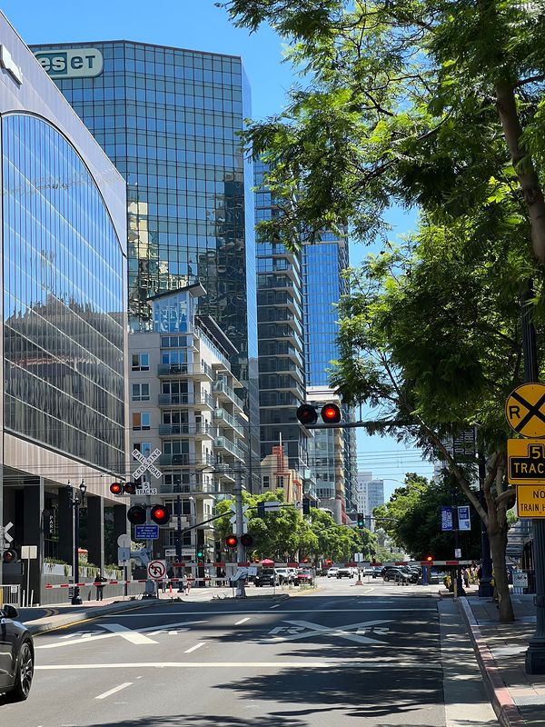
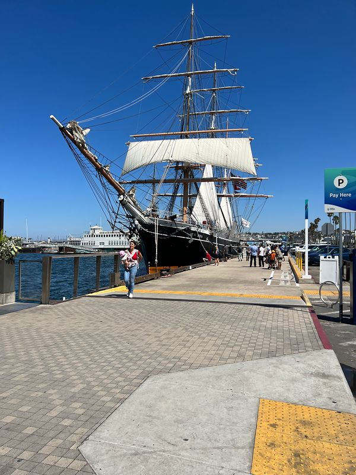
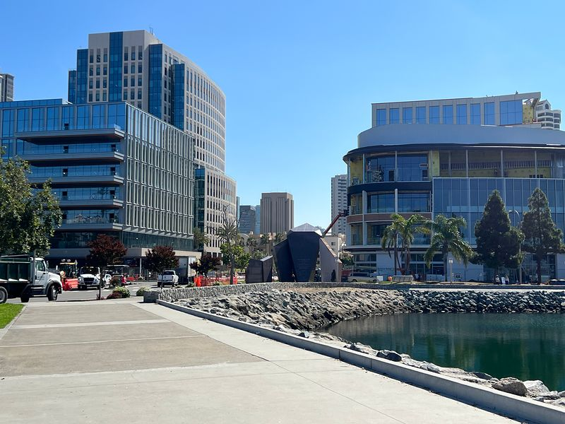
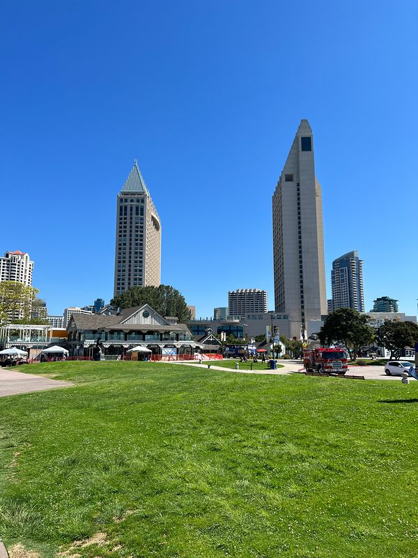
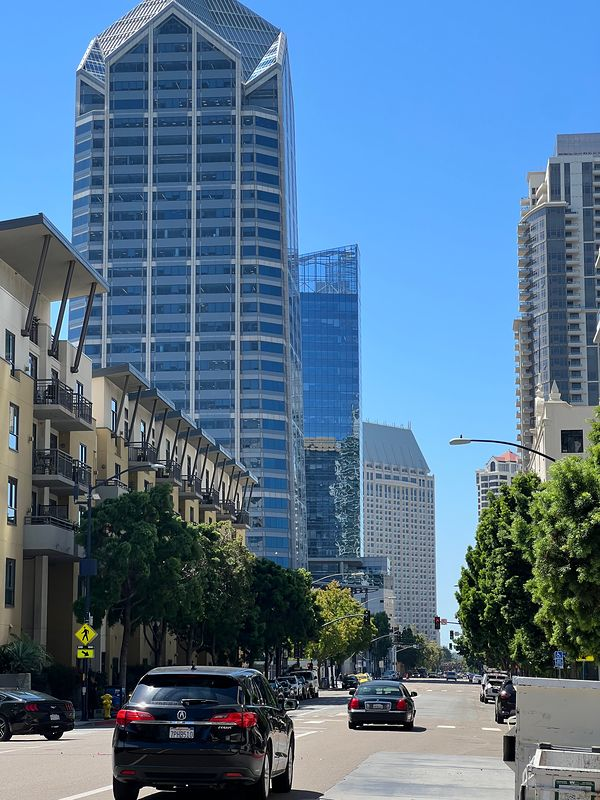
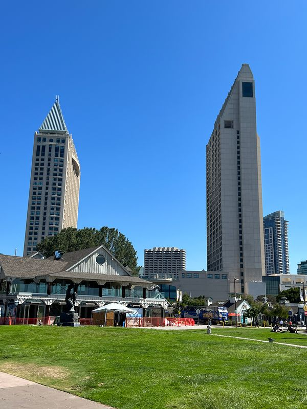
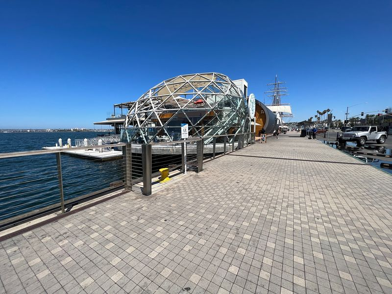

Architecture · San Diego, California · August 2023 · 7 photos
San Diego Waterfront & Downtown
Glass towers against a hard blue sky, palm-lined promenades, the tall ship at its berth and the Embarcadero in midday light: a morning walking the San Diego waterfront with the lens kept wide.







Need coverage like this?
Motorsport, events, aerials and commercial work — in Chile and abroad. Archive images available for licensing.
License this event Get in touch WhatsAppMore galleries
WRC Rally Chile 2019
Rally Raid — Atacama Desert
Grand Prix of Long Beach 2018
ISDE Chile — Six Days of Enduro
Mountain Bike Enduro — Chile
Opening Day at Del Mar
St. Patrick's Day Parade — Hermosa Beach
Lebowski Fest LA 2013
On the Poker Tour
Live Music
Portraits
Playas de Tijuana
San Francisco & Los Angeles
Las Vegas Nights
Aerial & Drone
Andes & Glaciers
Coast, Travel & Wildlife